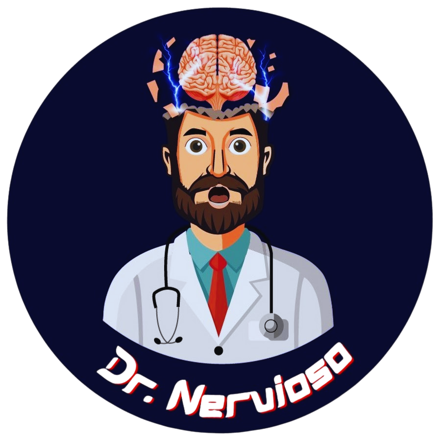
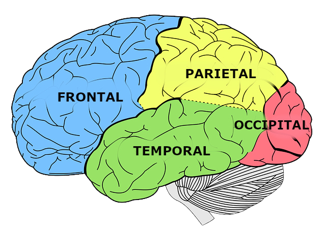

Medico General | UAA | Docente en: Neuroanatomía, Neurología, Anatomía, Histología, Embriología y Farmacología.
El sistema nervioso central se organiza en regiones especializadas, cada una con funciones críticas para la homeostasis y el comportamiento.
Estructura más voluminosa del SNC. Dividido en dos hemisferios conectados por el cuerpo calloso. Responsable de funciones superiores: cognición, lenguaje, memoria y movimiento voluntario.
TelencéfaloIncluye el tálamo y el hipotálamo. El tálamo actúa como estación de relieve sensorial; el hipotálamo regula funciones autonómicas y endocrinas (ciclo circadiano, temperatura, homeostasis).
Tálamo · HipotálamoConformado por mesencéfalo, protuberancia (puente de Varolio) y bulbo raquídeo. Controla funciones vitales: respiración, frecuencia cardíaca y nivel de conciencia.
Mesencéfalo · Puente · BulboUbicado en la fosa posterior. Coordina el movimiento, el equilibrio y el tono muscular. Recibe aferencias de la médula espinal, tronco encefálico y corteza motora.
Vermis · HemisferiosRed de cavidades interconectadas que producen y circulan el líquido cefalorraquídeo (LCR). Compuesto por los ventrículos laterales, III y IV ventrículo y el acueducto de Silvio.
LCR · VentrículosCircuito emocional y mnemónico. Incluye hipocampo (memoria declarativa), amígdala (respuesta emocional/miedo), giro cingulado y fórnix. Fuertemente vinculado al sistema endocrino.
Hipocampo · AmígdalaLa corteza cerebral se divide topográficamente en cuatro lóbulos principales, cada uno con funciones especializadas y relevancia clínica diferencial.
Motor, planificación ejecutiva, lenguaje expresivo (área de Broca, hemisferio dominante), personalidad y control de impulsos.
Integración sensorial, procesamiento espacial, cálculo aritmético y conciencia corporal.
Procesamiento auditivo, comprensión del lenguaje, memoria declarativa y reconocimiento de caras.
Procesamiento visual primario y de asociación. Análisis de forma, color, movimiento y reconocimiento de objetos.
Integración interoceptiva, gusto, función autonómica y procesamiento emocional visceral.

Selecciona un lóbulo para ver la relevancia clínica.
Los 12 pares craneales emergen del encéfalo y regulan funciones sensoriales, motoras y autónomas en cabeza, cuello y vísceras.
| N° | Nombre | Tipo | Función Principal | Prueba Clínica |
|---|---|---|---|---|
| I | Olfatorio | Sensitivo | Olfacción | Sustancias odoríferas c/u ojo cerrado |
| II | Óptico | Sensitivo | Visión | Agudeza visual, campos visuales, fondo de ojo |
| III | Motor ocular común | Motor | Movimientos oculares, elevación párpado, miosis | Seguimiento, reflejo fotomotor, ptosis |
| IV | Troclear | Motor | Movimiento infero-interno del ojo | Diplopía oblicua, mirada inferior-medial |
| V | Trigémino | Mixto | Sensibilidad facial, masticación | Táctil facial, reflejo corneal, fuerza maseterina |
| VI | Motor ocular externo | Motor | Abducción ocular (recto externo) | Mirada lateral, estrabismo convergente |
| VII | Facial | Mixto | Mímica facial, gusto 2/3 ant., lagrimeo | Sonreír, fruncir ceño, soplido, gusto ant. |
| VIII | Vestibulococlear | Sensitivo | Audición y equilibrio | Weber, Rinne, Romberg, nistagmo |
| IX | Glosofaríngeo | Mixto | Gusto 1/3 post., deglución, reflejo nauseoso | Reflejo faríngeo, sensibilidad amigdalina |
| X | Vago | Mixto | Voz, deglución, parasimpático visceral | Disfonía, desviación úvula, reflejo nauseoso |
| XI | Accesorio espinal | Motor | Esternocleidomastoideo y trapecio | Fuerza al girar la cabeza y elevar hombros |
| XII | Hipogloso | Motor | Movimientos de la lengua | Protrusión, lateralización, atrofia lingual |
Pon a prueba tus conocimientos de neuroanatomía clínica.
—